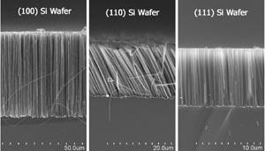
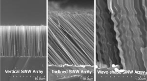
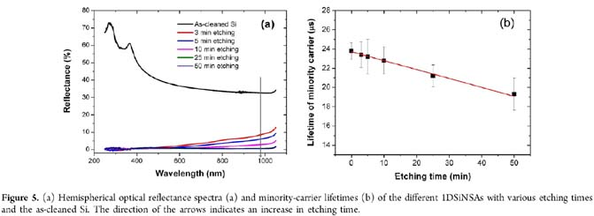
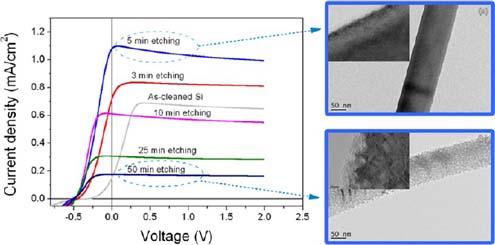
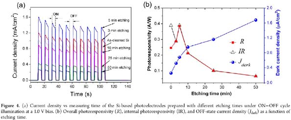

纳米半导体结构与器件研究
近十几年来，纳米半导体结构（纳米线、纳米棒、纳米孔等）因其与现代半导体技术的兼容性及独特的光学、电学性质引起了人们的广泛研究兴趣。纳米半导体结构在纳米电子器件（如生物传感器、太阳能电池、红外可见发光、场效应晶体管、热电冷却器、光电探测器及其它光电器件等领域）有着广泛的应用前景。目前，我们的研究主要集中在单晶硅基体上利用化学腐蚀和气相沉积技术原位合成一维硅纳米结构和纳米结构的合成，并探索其在光电器件、场效应晶体管、传感器和电子发射器件等领域的应用。
化学刻蚀制备硅一维纳米结构
我们目前正研究用化学腐蚀技术在单晶硅基体上原位制备一维硅纳米结构阵列，并探讨其在电子发射器件、光电探测器、传感器和纳米电子器件等方面的应用。我们研究工作主要集中在不同取向一维硅纳米结构的制备及催化剂形态结构、刻蚀液和温度等对一维硅纳米结构制备的影响。图1分别是由（100）、（110）和（111）取向硅片原位合成的一维硅纳米结构。图2是在（111）硅片上通过工艺控制获得的不同形态结构的一维硅纳米结构。下图为合成的多孔硅纳米线阵列及其高分辨电镜照片。



锗纳米结构的无结场效应晶体管研究
锗也具有比硅高的空穴和电子迁移率，同时由于费米能级钉扎效应，任何金属与p型锗的接触都表现为欧姆接触。我们利用高掺杂浓度（1019

硅一维纳米结构的物理性能研究
最近关于一维硅纳米结构的光电性质研究表明其在高响应的光电探测器和太阳能收集和热电等方面有着很大的应用前景。对于这些应用，纳米结构的光谱吸收性能（光电响应和太阳能电池效率提高的重要影响因素）是必须要研究的。我们正在研究具有高光吸收性能的一维硅纳米结构制备的工艺并探讨结构对光吸收的影响。图5所示为不同形貌结构的一维硅纳米结构的光反射谱及相应的少子寿命。

我们正在探讨利用电化学方法测量一维硅纳米结构的光电响应特征，以此研发基于一维硅纳米结构的光电探测器。图4给出了不同纳米结构下一维硅纳米结构阵列的光电响应曲线。


同时，我们也在研究一维多孔硅纳米结构的热电性能，以期得到一种新的基于硅纳米结构的热电器件。图 所示为多孔硅纳米线阵列的热电性能的测量结果，其中多孔硅纳米线的热导率降低到了1.68W m-1 K-1，ZT值达到了0.49.